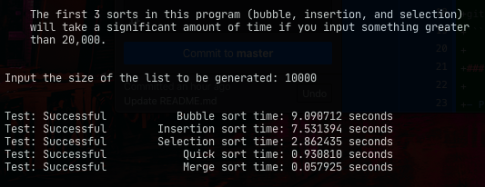

Description
Table of Contents
About
This is a simple application that takes the most fundamental sorting algorithms that are taught in every algorithms class. This application is meant to be used as a study tool to help people understand the concepts and underlying algorithms at work and visualize it in a way that is easy to comprehend.
This visualizer has a slider to go faster or slower through the iterations so that you can understand each step that is being done on the list during the sort. It was also designed with a simple GUI in mind for ease of use.
Getting Started
To get started to use the visualizer, you have to first get a copy of this repository using the following command:
git clone https://github.com/AshuHK/Sorting_Visualization.git
Prerequisites
- Python 3.8: the programming language used to build the visualizer
- Installation instructions can be found at their website here
- Tkinter: the GUI framework to build the visualizer
- Installation instructions can be found at their website here too
Running the Visualizer
To run the visualizer, run the following commands in a termnial that is in the repo:
cd gui_based_sorts
python3.8 main.py
To run the text based sorts to see the time each take, do this instead:
cd text_based_sorts
python3.8 test.py
Here is what the visualizer looks like in action: 
and this is the text based test file that will show you the times:

Usage
This purpose of this application is so that it is easier to understand these sorting algorithms that are fundamental to programming that it can help to see those sorts in action. There are also additional notes and more detailed comments in text_based_sorts that give an better explanation as well as the time and space complexities for most functions.
Contributing
To contribute, you can make a pull request or issue on this repository if there are any sorts to be added, bugs to be fixed, or anything else.